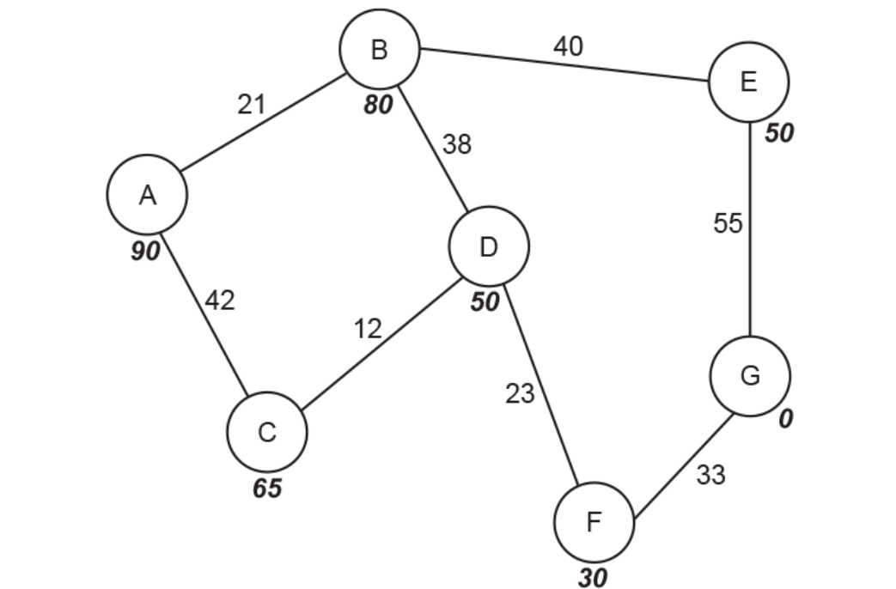

Why are predecessors recorded when a distance improves?
Can Dijkstra assume negative edge weights are safe?
A route has edge costs 2, 3 and 2. What is the total path cost?
Starting S=0, edge S–A=4, then A–G=2. What is the S→A→G path cost?
Retrieval
Why are predecessors recorded when a distance improves?
They allow reconstruction of the actual shortest route.
Retrieval
Can Dijkstra assume negative edge weights are safe?
No. Its shortest-path guarantee requires non-negative weights.
Retrieval
A route has edge costs 2, 3 and 2. What is the total path cost?
7.
Retrieval
Starting S=0, edge S–A=4, then A–G=2. What is the S→A→G path cost?
6.
A*: heuristic search I
By the end you can…- Calculate f(n)=g(n)+h(n)
- Choose a node from the frontier using lowest f-score
- Trace an optimal A* search with an admissible heuristic
Key vocabulary
g(n)h(n)f(n)frontier / open setadmissible heuristic
CODE / ALGORITHM FIRST
Trace the graph and table
// A*: conceptual frontier algorithm (non-negative costs)
open = {start}; g[start] = 0; g[others] = infinity
while open is not empty:
current = open vertex with smallest f = g + h
if current is goal: return path via predecessors
remove current from open; mark closed
for each edge current -> neighbour:
candidate = g[current] + edgeWeight
if candidate < g[neighbour]:
g[neighbour] = candidate
predecessor[neighbour] = current
add neighbour to open (reopen if closed)
// For a closed-set algorithm without reopening,
// use a consistent h. Admissible h never overestimates.STEP 1 OF 5
g, h and f have different meanings
g is distance already travelled; h estimates the remaining distance; f=g+h is the estimated total.
STEP 2 OF 5
Start with a frontier
From S, A gets g2,h3,f5, while B gets g6,h1,f7. Choose A, not simply the smallest h.
STEP 3 OF 5
Improve a discovered route
From A, B improves to g4,h1,f5. From B, G improves to g6,h0,f6.
STEP 4 OF 5
Stop on the selected goal
When G is selected from the frontier, reconstruct S→A→B→G with total cost 6.
STEP 5 OF 5
Keep the heuristic safe
The estimates h(S)=5,h(A)=3,h(B)=1,h(G)=0 never exceed the actual cheapest remaining cost.
I DO · MODEL
Start at P (g=0). Finish at G. Trace A* using the supplied estimates.
Edges: P-Q=3, P-R=6, Q-R=1, Q-G=8, R-G=2.
h(P)=4, h(Q)=3, h(R)=2, h(G)=0.STEP 1 OF 4
Choose Q from the frontier
From P, Q has g3+h3=f6, R has g6+h2=f8. Choose Q.
STEP 2 OF 4
Improve R through Q
Through Q, R improves to g4,h2,f6; G gets g11.
STEP 3 OF 4
Improve G through R
From R, G improves to g6,h0,f6.
STEP 4 OF 4
Reconstruct P → Q → R → G
Select G: predecessor chain yields P→Q→R→G, cost 6.
WE DO · TRY → DISCUSS → IMPROVE
Choose the next node using f
Start at M. Finish at G. M starts with g=0.
Predict the open node with the lowest f=g+h. Discuss each update before revealing it.
PART 1 · INDEPENDENT GRAPH SKILLS
Graph practice: Guided → Independent.
On your device, start at the labelled node. Choose the lowest open f, update g and predecessors, then reconstruct the route.
Open A* graph practiceThen return for the paper question. Challenge is an extension.
NEXT
Return to the classroom question. Work independently on paper before revealing the mark scheme.
PART 2 · OCR-STYLE EXAM QUESTION · 6 MARKS
Graph edges S–A=2, S–B=5, A–B=1 and B–G=2. Heuristics: h(S)=4,h(A)=2,h(B)=1,h(G)=0. Calculate f for A and B when first found and state the optimal S→G route.
MARK SCHEME
[6] From S, A has g2,h2,f4 [2]; B has g5,h1,f6 [2]. Expanding A improves B to g3,f4 [1]; route S→A→B→G total 5 [1].
PART 3 · EXAM EXTENSION · 6 MARKS
Explain why admissibility matters. For the graph S–A=2, A–G=4 and S–G=10, what is the greatest admissible h(A), and why?
MARK SCHEME
[6] A heuristic is admissible when it never overestimates the true cheapest remaining cost [2]. From A the direct cheapest cost to G is 4 [2], so h(A) may be at most 4 [1] (assuming non-negative estimates); overestimating can lead to the optimal path being missed under early-goal termination [1].
PART 4 · OCR NOVEMBER 2021 · QUESTION 1(i) · 2 MARKS
DancerGold is a game character. A* will be used to find a route from start node A to goal G.
Define the term heuristic in relation to the A* algorithm. [2]
OCR H446/02 November 2021 · Question 1(i)
MARK SCHEME · 2 MARKS
A heuristic is a rule of thumb or estimate [1] of the remaining cost or distance from a node to the goal [1].
It helps A* prioritise promising routes to investigate.
PART 5 · OCR NOVEMBER 2021 · QUESTION 1(ii) · 8 MARKS
DancerGold: perform A* from A to G
Edges show movement times in seconds. Bold numbers next to nodes give their heuristic estimates. Show your working, nodes visited, final path and distance. [8]

Fig. 1 · OCR H446/02 November 2021, Question 1
WORKING TABLE · COMPLETE ON PAPER
| Node | g | h | f=g+h | Previous |
|---|---|---|---|---|
| A | ||||
| B | ||||
| C | ||||
| D | ||||
| E | ||||
| F | ||||
| G |
Final path: ___________________
Distance: __________ seconds
MARK SCHEME · 8 MARKS
1 mark for each correct node row (A–G), then 1 mark for the final route and cost.
| Node | g | h | f=g+h | Previous |
|---|---|---|---|---|
| A | 0 | 90 | 90 | — |
| B | 21 | 80 | 101 | A |
| C | 42 | 65 | 107 | A |
| D | 54 | 50 | 104 | C |
| E | 61 | 50 | 111 | B |
| F | 77 | 30 | 107 | D |
| G | 110 | 0 | 110 | F |
Final path: A → C → D → F → G. Distance: 110 seconds. [1]
Expansion order: A, B, C, D, F, G. B is explored first (f=101); via C, D improves to g=54. E is discovered but not expanded (f=111).
g(n)
Known best cost from the start to vertex n.
h(n)
Estimated cost from vertex n to the goal.
f(n)
Combined score g(n)+h(n).
frontier / open set
Discovered vertices awaiting expansion.
admissible heuristic
An estimate that never exceeds the true cheapest remaining cost.
True or false?
A* chooses the next vertex solely by its smallest heuristic h(n).
Model answer
False. It normally chooses the frontier vertex with smallest f(n)=g(n)+h(n).
Confidence check
Explain one correct table update and one point of uncertainty.